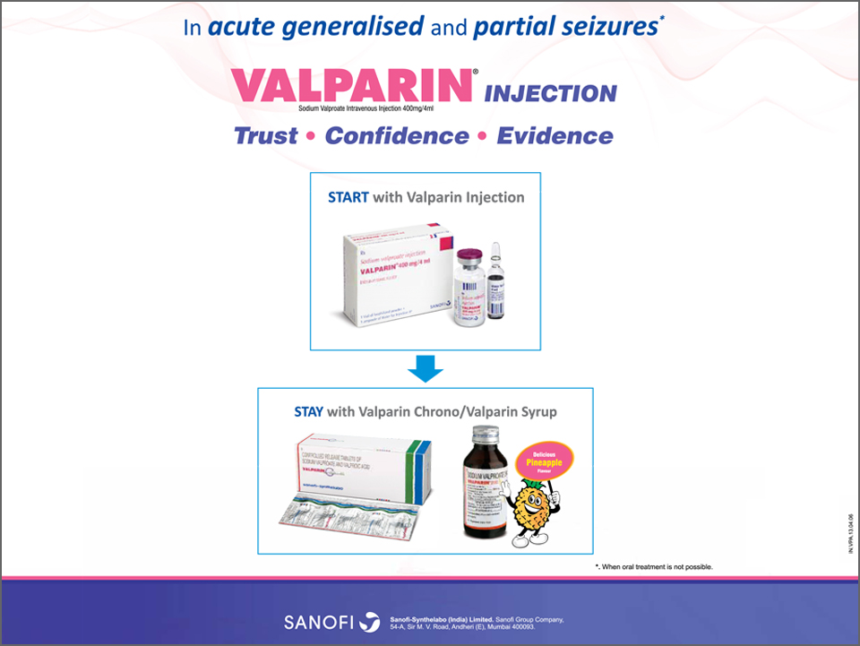

-
Superior efficacy of sodium valproate IV for acute seizures and status epilepticus
by medeka healthcare on october 01, 2013
Several studies have reported that sodium valproate IV is safe and effective in the management of status epilepticus and acute repetitive seizures.2,3,6-9
Chitsaz and colleagues reported that sodium valproate IV is more effective and should be preferred over IV phenytoin in status epilepticus treatment. In this study, patients were randomly assigned to treatment with either sodium valproate IV or phenytoin IV. The rate of response to treatment within the first 12 h showed no significant differences between treatment with sodium valproate IV and phenytoin IV (73.3 vs. 60%, p=0.06). No clinical complications were observed in the sodium valproate IV group; whereas in the phenytoin group, 4 patients (26.7%) had complications because of side effects (p=0.03). No difference in terms of adverse events was found (p=0.06).3
Agarwal and colleagues reported that sodium valproate IV is comparably effective, better tolerated, and easy to use than phenytoin IV in patients with benzodiazepine refractory status epilepticus.6 The patients (n=100) were randomly divided into 2 groups (n=50 each) and received either sodium valproate IV or phenytoin IV. The treatment was considered to be successful if it caused cessation of seizures within 20 minutes after infusion with no seizures for the next 12 hours. Results of the study were as follows:
- Sodium valproate IV was as effective as phenytoin IV in patients with status epilepticus (88 vs. 84%, p>0.05; Figure 1).
- Patients who had status epilepticus for a duration of <2 hours showed significant response with sodium valproate IV and phenytoin IV (Figure 1).
- Total number of adverse events did not differ significantly between the two groups (p>0.05).
- No differences were observed among the treatments with respect to recurrence after the 12-hour study period or the outcome at 7 days.
Agarwal et al. concluded that sodium valproate IV might be used as an alternative to phenytoin in patients with benzodiazepine refractory status epilepticus, especially among those with cardiorespiratory disease.6
Gilad and colleagues substantiated that sodium valproate IV was better tolerated and had comparable efficacy to IV phenytoin for the treatment of status epilepticus and acute repetitive seizures.7 Patients were treated either with sodium valproate IV (n=49) or IV phenytoin (n=25). Both drugs had comparable seizure discontinuation (88% vs. 87.8%). No side effects were observed in the sodium valproate IV group, whereas 12% patients in the phenytoin group showed incidences of adverse events.7
In a systematic review, Brigo and colleagues reported that IV valproic acid has better tolerability than phenytoin in generalized convulsive status epilepticus without any statistically significant differences in terms of efficacy. Clinical seizure cessation after drug administration, seizure freedom at 24 hours, and adverse effects were determined. As compared to phenytoin, sodium valproate IV had statistically lower risk of adverse effects with no differences in cessation of generalized convulsive status epilepticus after drug administration and seizure freedom at 24 hours (Table 1).8
Malamiri et al. reported that rapid loading of sodium valproate IV is effective, safe, and should be recommended over IV phenobarbital in children with status epilepticus and acute prolonged convulsive seizures.2 They compared the efficacy and safety of both drugs in patients. In this study, children with status epilepticus received either phenobarbital IV (n=30) or sodium valproate IV (n=30) randomly. Rapid infusion of sodium valproate IV was more successful for seizure termination (within 20 min after infusion) in the patients (90% vs. 77%, p=0.189). Occurrence of clinically significant adverse events was less in the sodium valproate IV group as compared to the phenobarbital group (24 vs. 74%, p<0.001).2
According to a study by Alvarez and colleagues, sodium valproate IV is more effective than levetiracetam and phenytoin IV.9 They performed a comparative study with phenytoin IV, sodium valproate IV, and levetiracetam IV in status epilepticus patients. In this retrospective study, data of 187 patients were considered, in which phenytoin, sodium valproate IV, or levetiracetam was given after the administration of benzodiazepines. The parameters assessed were: clinical status epilepticus features, failure of second-line treatment to control status epilepticus, new handicap, and mortality at hospital discharge. The findings of the study were:
- Failure rate to control status epilepticus episodes, their severity, and the frequency of drug-related Sodium valproate IV allows rapid loading in patients with inadequate seizure control and easy transition from IV to oral route. Superior efficacy of sodium valproate IV reported in acute seizures and status epilepticus Times of Neurology TIMES OF NEUROLOGY 5PG mortality were least in the case of sodium valproate IV as compared to the other two drugs.
- Levetiracetam failed to control status epilepticus more often than sodium valproate IV (odds ratio: 2.69; 95% confidence interval: 1.19–6.08).9
- 

Contents
- Initial monotherapy with levetiracetam fails more frequently than monotherapy with valproate or oxcarbazepine:An enlightening evidence
- Sodium valproate:A gold standard for the treatment of childhood epilepsy
- Superior efficacy of sodium valproate IV reported in acute seizures and status epilepticus
- Clobazam: An effective long-term treatment option for Lennox-Gastaut syndrome
- Hospital coverage:Krishna Institute of Medical Sciences
- Oxcarbazepine:A valuable treatment option for partial-onset seizures in children
- Pregabalin and methylcobalamin combination for neuropathic pain:The Indian scenario
- Important aspects of epilepsy management:during pregnancy
- Neurology News
- Neurology Quiz
News Digest

ECG should be considered in patients with refractory epilepsy
Analysis of electrocardiogram (ECG) monitoring in patients with refractory epilepsy revealed significant differences in heart rate between ictal and pre-ictal states, between ictal and post-ictal states, and between pre- and post-ictal states. Hence, ECG might be helpful to detect serious cardiac abnormalities in patients with refractory epilepsy.
J Res Med Sci. 2013;18(Suppl 1):S32–4.

Use of gabapentin in pregnancy is not associated with increased risk of major malformations
A prospective study of pregnancy outcomes in 223 pregnant women who were exposed to gabapentin and 223 pregnant women who were unexposed to gabapentin reported that gabapentin use in pregnancy was not associated with increased risk for major malformations.
Epilepsy Behav. 2013;26(1):109–13.

A portable automatic device for the detection of generalized tonicclonic seizures
Increased S100B protein levels in cerebrospinal fluid may be associated with the neuronal damage following central nervous infections.
Epilepsia. 2013;54(4):e58–61.
Updates